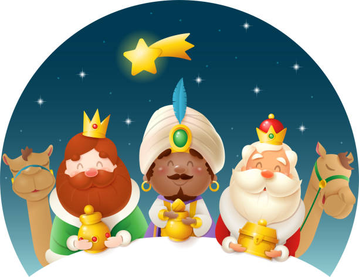

COMITIVA REIS MAGOS
Venres 5 de XANEIRO
10:45 Rois Campo da festa
11:30 Buxán Campo da festa
12:00 Leroño Campo da festa
12:30 Augasantas Campo da festa +chocolate e taller de pintura a partir das 11:00h_AVV Augasantas
15:00 Ermedelo Local social do Codeso + merendola e sorpresas_veciñanza e Asoc. mulleres rurais de Ermedelo
15:45 Urdilde Campo da festa + taller de pintacaras e petiscos_comision de festas de Urdilde
16:30 Costa Local social + chocolatada_AVV O Travadoiro
17:15 Herbogo Local social + merendola e contacontos_AVV de Herbogo
17:45 Seira Campo da festa de S. Lourenzo + chocolatada e musica_AVV San Lourenzo de Seira
18:15 Sorribas Campo da festa
18:45 Ribasar Campo da festa
19:30 Oín Campo da festa